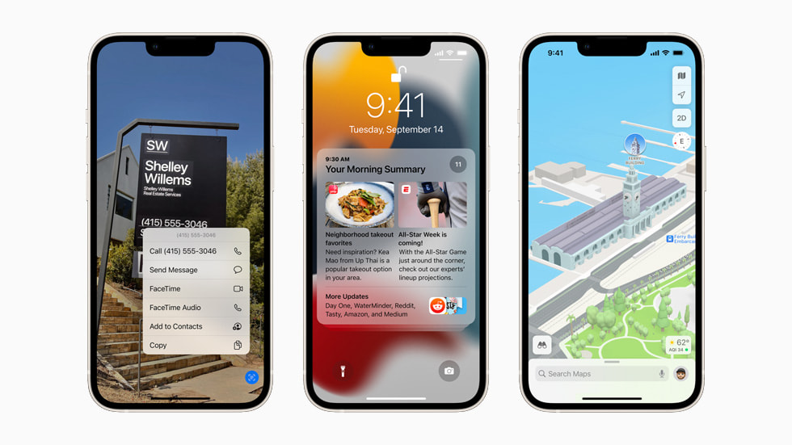

iOS 15 enfocó sus esfuerzos en mejorar las capacidades de comunicación remota y proporcionar herramientas para gestionar la atención digital.
Mejoras en FaceTime y SharePlay
FaceTime recibió actualizaciones estructurales como el audio espacial y el aislamiento de voz para eliminar ruidos ambientales. SharePlay se convirtió en la API
insignia, permitiendo la sincronización de películas, música y aplicaciones entre múltiples usuarios durante una llamada. Además, se introdujeron los Modos de
Concentración (Focus), permitiendo filtrar notificaciones basadas en si el usuario está trabajando, durmiendo o en su tiempo personal.
iOS 15: Conectividad y Contexto en el Mundo Post-Pandémico

| Versión | Categoría de Mejora | Detalle del Error Corregido |
|---|---|---|
| 15.0.1 | Almacenamiento | Solución a alertas falsas de "Almacenamiento lleno" a pesar de tener espacio disponible. |
| 15.4.1 | Batería | Resolución de un problema de drenaje de batería inusualmente rápido tras la actualización. |
| 15.6 | Navegación | Arreglo de un error en Safari donde las pestañas volvían a páginas anteriores de forma inesperada. |